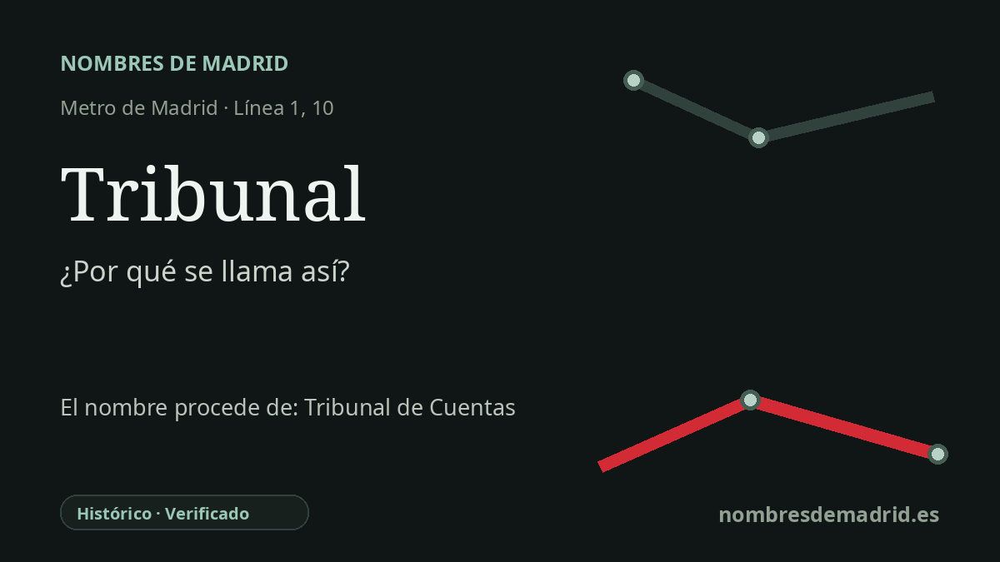

Publicado el · Investigación de Nombres de Madrid · Cómo verificamos cada origen · 9 fuentes consultadas
Respuesta rápida
Tribunal se llama así por el Tribunal de Cuentas, cuya sede decimonónica está junto a la estación en la calle Fuencarral. La estación se proyectó como Hospicio, por el antiguo Real Hospicio situado enfrente, pero el nombre actual quedó muy pronto ligado a la zona del Tribunal de Cuentas.
La historia del nombre
La estación de Tribunal toma su nombre del Tribunal de Cuentas, cuya sede principal se encuentra en la calle Fuencarral 81, junto al entorno de la estación. En el uso madrileño, “Tribunal” funcionó como una forma breve de referirse a la institución y a su edificio, de modo que el nombre del Metro señala menos a un tribunal genérico que a un hito urbano muy concreto de Fuencarral.
La institución que hay detrás del nombre es el órgano supremo de control externo de las cuentas y de la gestión económica del sector público español. Sus antecedentes se remontan a organismos contables medievales y modernos, aunque el Tribunal de Cuentas contemporáneo se configura en el siglo XIX y hoy está reconocido en el marco constitucional español. La sede actual forma parte de esa historia: fue proyectada por Francisco Jareño y Alarcón y construida entre 1860 y 1863 sobre una manzana de planta trapezoidal.
En la historia del nombre aparece además otro hito próximo: el Real Hospicio de San Fernando, al otro lado de Fuencarral. La documentación histórica de Metro de Madrid conserva un plano de construcción de 1918 de la “estación de Hospicio”, y el material patrimonial de Metro explica que ese nombre de proyecto procedía del Real Hospicio situado frente a la boca de acceso. Aquel edificio, levantado en su forma definitiva entre 1721 y 1726 por Pedro de Ribera, es hoy el Museo de Historia de Madrid y destaca por su exuberante portada barroca.
La estación pertenece a la línea norte-sur original del Metro de Madrid. La primera línea fue inaugurada oficialmente por Alfonso XIII el 17 de octubre de 1919 entre Sol y Cuatro Caminos y abrió al público días después; la historia regional del transporte enumera esta parada como Hospicio, hoy Tribunal. Su papel como estación de correspondencia llegó mucho más tarde, cuando el antiguo Suburbano se prolongó de Plaza de España a Alonso Martínez en diciembre de 1981, incorporando los andenes que hoy forman parte de la línea 10 y conectando con la línea 1 en Tribunal.
El origen del nombre actual es seguro, pero la cronología de “Hospicio” debe tratarse con cautela. Algunas fuentes secundarias afirman que la estación se llamó originalmente Hospicio, mientras que el catálogo del centenario de Metro lo formula de manera más precisa como nombre de proyecto e identifica un plano de construcción fechado el 9 de enero de 1918 con ese título. Sin revisar planos de explotación, billetes, rótulos o documentación empresarial temprana, lo más prudente para el público es decir que Hospicio fue el nombre documentado de proyecto o nombre muy temprano, y que Tribunal remite al cercano Tribunal de Cuentas.